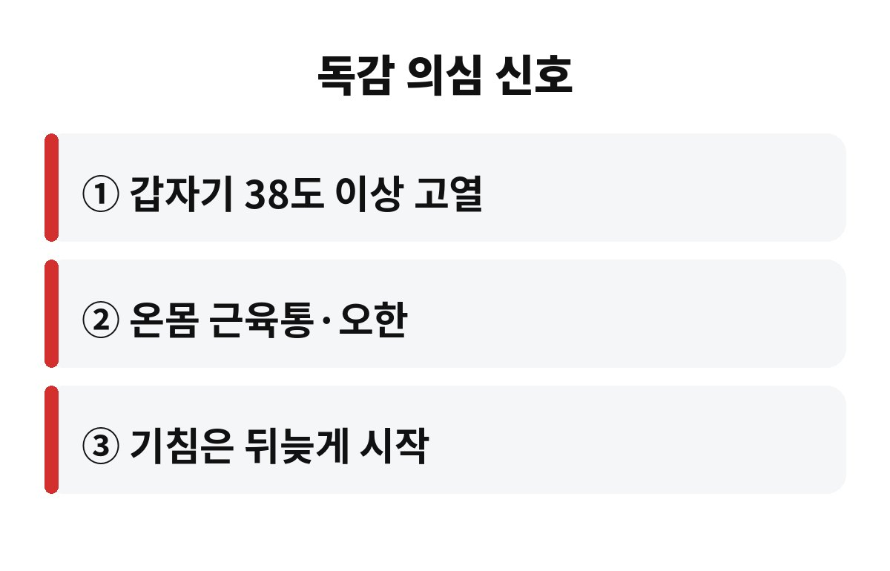
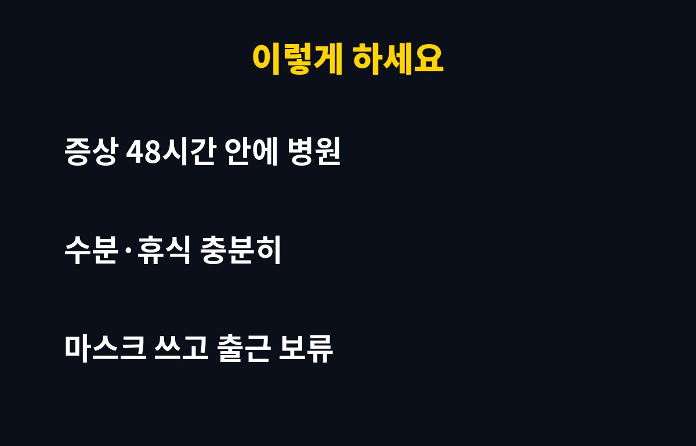

독감 초기 증상은 갑작스러운 38도 이상의 고열과 온몸 근육통이고, 항바이러스제는 증상이 시작된 뒤 48시간 안에 먹어야 효과가 가장 좋다고 알려져 있어요. 그냥 감기겠지 하고 이틀을 버티는 직장인이라면, 그 이틀이 회복 속도를 갈라놓을 수 있습니다.
혹시 지금 목이 칼칼하고 몸이 으슬으슬한데 약국 감기약으로 넘기려고 하셨나요?
가장 큰 차이는 시작하는 속도예요. 감기는 목이 아프고 콧물이 나다가 서서히 심해지지만, 독감은 어제까지 멀쩡했는데 오늘 아침 갑자기 몸이 두들겨 맞은 것처럼 아픈 경우가 많아요.
독감 초기 증상으로 흔히 꼽는 건 이런 것들이에요. 38도 안팎의 갑작스러운 열, 몸이 덜덜 떨리는 오한, 팔다리와 허리까지 쑤시는 근육통, 극심한 피로감이죠. 기침이나 콧물은 오히려 하루 이틀 뒤에 따라오기도 해요.
| 구분 | 감기 | 독감 |
| 시작 | 서서히 | 갑자기 |
| 열 | 없거나 미열 | 38도 이상 고열 |
| 근육통·피로 | 가벼움 | 심함 |
| 주 증상 | 콧물·인후통 | 열·근육통 먼저 |
많은 분이 독감을 "좀 센 감기" 정도로 생각하지만, 실제로는 원인 바이러스부터 달라요. 감기는 수백 가지 바이러스가 일으키는 가벼운 호흡기 질환이고, 독감은 인플루엔자 바이러스가 일으켜서 폐렴 같은 합병증으로 이어질 수 있어요. 그래서 "며칠 쉬면 낫겠지" 하고 넘기기엔 부담이 큰 병이에요.
특히 환절기와 겨울 초입에는 실내 환기가 줄고 건조해져서 바이러스가 더 오래 떠다녀요. 지하철, 사무실, 학원처럼 사람이 몰리는 곳이 많은 직장인과 학부모라면 노출 기회가 그만큼 많죠.
독감 바이러스는 증상이 나타난 초기에 몸속에서 급격히 불어나요. 항바이러스제는 바이러스를 없애는 약이 아니라 늘어나는 속도를 늦추는 약이라서, 초반에 먹을수록 효과가 커요.
보통 증상이 시작된 뒤 48시간 이내에 복용을 시작하라고 안내해요. 그 시간이 지나면 효과가 떨어질 수 있으니, 몸이 이상하다 싶으면 하루라도 빨리 병원에 가는 게 이득이에요. 검사는 코나 목 안쪽을 면봉으로 훑는 간단한 방식이라 금방 끝나요.
물론 약을 먹는다고 당장 거짓말처럼 낫는 건 아니에요. 열이 내리는 기간이 조금 짧아지고 합병증 위험을 줄이는 데 도움을 준다고 이해하시면 정확해요.
독감은 기침과 침방울로 옆 사람에게 쉽게 옮아요. 열이 나는 상태로 출근하면 나만 힘든 게 아니라 팀 전체가 줄줄이 쓰러질 수 있죠. 열이 내린 뒤에도 하루 이틀은 전염력이 남아 있을 수 있으니 마스크는 꼭 챙기세요.
집에서는 이렇게 하세요.
첫째, 물을 자주 마셔요. 열이 나면 몸에서 수분이 빠르게 빠져나가요. 둘째, 해열제는 설명서의 용량과 간격을 지켜 드세요. 셋째, 억지로 땀을 빼겠다고 두꺼운 이불을 뒤집어쓰는 건 오히려 탈수만 부를 수 있어요. 넷째, 푹 쉬는 게 최고의 치료예요.
병원에 가기 전에 간단히 메모해 두면 진료가 훨씬 빨라져요. 열이 언제 시작됐는지, 최고 체온이 몇 도였는지, 먹은 약이 있는지를 적어 가세요. 의사가 증상 시작 시점을 정확히 알아야 약 처방 시기를 판단할 수 있거든요.
또 하나, 열이 내렸다고 곧바로 운동이나 회식에 복귀하는 건 피하세요. 몸이 완전히 회복되기까지는 생각보다 시간이 걸리고, 무리하면 기침이 몇 주씩 이어지기도 해요. 손 씻기와 마스크 착용, 실내 환기 같은 기본 수칙이 결국 제일 강력한 예방법이에요.
숨이 차거나 가슴이 아프고, 열이 좀처럼 내리지 않거나, 아이가 축 처져서 깨워도 반응이 둔하다면 지체하지 말고 진료를 받아야 해요. 임신부, 어르신, 당뇨나 만성 폐질환이 있는 분은 합병증 위험이 높아서 더 일찍 병원에 가시길 권해요.
그리고 아직 예방접종 전이라면 지금도 늦지 않았어요. 접종 후 항체가 만들어지기까지 보통 2주 정도 걸리니, 미루지 말고 가까운 병원에서 맞아 두세요.
여러분은 몸이 아플 때 바로 병원에 가는 편인가요, 아니면 하루 이틀 버텨 보는 편인가요? 댓글로 알려 주세요. 도움이 되셨다면 구독해 두시면 계절별 건강 정보를 먼저 받아보실 수 있어요.


※ 이 글은 일반적인 건강 정보이며 진단·치료를 대신하지 않습니다. 증상이 있다면 반드시 전문의 상담을 받으세요.